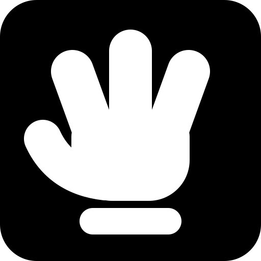
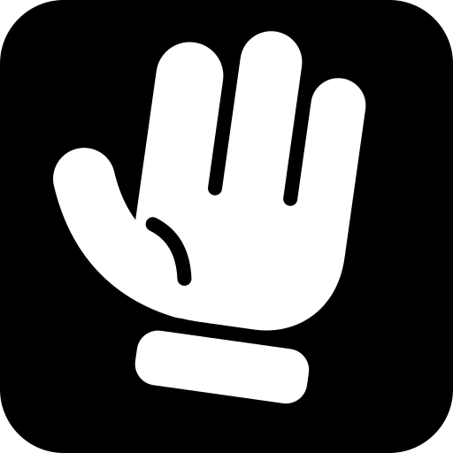
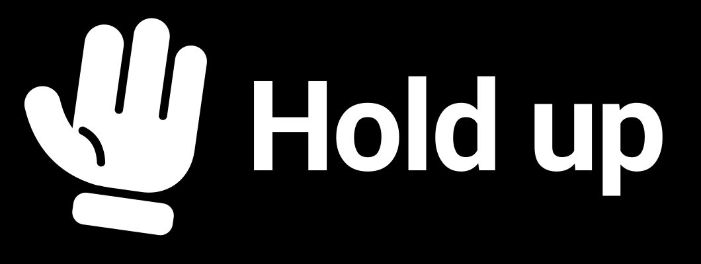

Une main gantée blanche, paume levée, sur fond noir. Deux couleurs, aucun dégradé, aucune ombre. Trois pistes, puis la piste retenue à toutes les tailles.
Trois pistes

A. De face, doigts écartés. La plus « dessin animé », mais le geste dit bonjour plus qu'il ne dit stop.

B. Penchée, doigts serrés, revers marqué. Retenue. Le geste d'arrêt, avec du mouvement.C. Géométrique, sur une grille de 16. La plus nette en petit, raide en grand. Sa grille sert à la version 16 et 32 px de B.
Piste retenue, sur fond noir
512, détaillée1284832, simplifiée1616, agrandie dix fois

Main seule, sans fond

Logotype horizontal
Piste retenue, sur fond blanc
Icône, 128483216Main noire, sans fondLogotype, version noire
Dans la barre d'outils, à 16 px
neve.exchange
neve.exchange
Barres factices, claire et sombre. Les trois formes grises tiennent la place d'autres extensions.
16 px, agrandie huit fois32 px, agrandie quatre fois